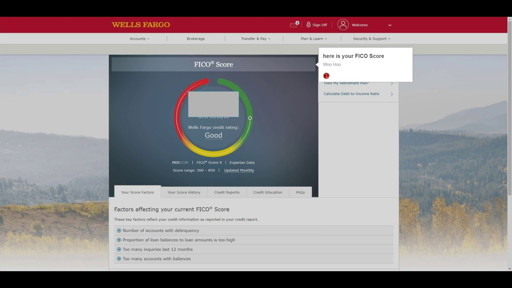

Check Your Free Credit Score | Experian
Consumer SMEs Small Business Business Data & Marketing Your privacy Global Sites United Kingdom Skip to main content Log in Sign up Menu Log in Back Credit score & report Experian products Free Experian Account Experian Credit Score & Report Statutory Report Which product is right for you? Boost your score! NEW FEATURE Helpful Information What is a credit score? What is a credit report? How do I improve my credit score? Why have I been refused credit? How does Boost improve my score? View all credit score & report guides NEW FEATURE
See if you can instantly boost your score
Learn more Back Compare credit offers Compare Credit cards Loans Mortgages Car insurance NEW Car finance Energy Helpful information Credit cards for bad credit Payday loans explained Refused for a mortgage? What affects insurance Used car finance guide Switching energy supplier How lenders are helping
credit customers
Learn more Back Identity theft Experian products Identity fraud report & monitoring Helpful Information What is Identity theft? If you are a victim of fraud Phishing and how to prevent it The warning signs of identity fraud Protect yourself against identity
theft with Identity Plus
Learn more Back Help & assistance
How can we help you today?
Refused credit Find out why a lender has refused your application My report is incorrect Something not quite right on your report? Let’s fix that Account issues Forgotten username, passwords & other issues Experian Boost All you need to know about boosting your score More help & support Search Log in Sign up free ×Experian Global Sites
Argentina Australia Austria Belgium Brazil Bulgaria Canada Chile China Czech Republic Denmark Finland France Germany Greece Hong Kong India Ireland Italy Japan Malaysia Mexico Morocco Netherlands New Zealand Norway Poland Russia Singapore South Africa South Korea Spain Sweden Switzerland Thailand Taiwan Turkey UAE United Kingdom United States Vietnam CloseYour Experian Free Credit Score
Our score is the UK’s most trusted credit score – it’s made from the data used in most successful credit applications, so it gives you a good idea of how lenders are likely to view you
Get your free scoreWhat's a credit score?
A credit score, also known as a credit rating, is a number that reflects the likelihood of you paying credit back. Lenders like banks and credit card companies will look at your credit history when they calculate your credit score, which will show them the level of risk in lending to you. The higher your credit score, the better your chances of being accepted for credit, at the best rates.
Your credit score influences your chances of getting:
Credit cards , loans and mortgages Car financing Gas & electricity monthly payments Mobile phone contracts Insurance monthly payments Property rentalsCan you check your credit score for free?
You can get your Experian Credit Score without paying a penny, by signing up for a Free Experian Account
Your free score will be updated every 30 days if you log in.
How does a credit score work?
Your credit score is calculated whenever you apply for credit, such as a loan, credit card, mortgage, or even a mobile phone contract. How your score is worked out depends on the company you’re applying to – different companies have different methods, so your credit rating may vary between them.
Lenders look at your borrowing history and how you typically repay money you’ve borrowed. Usually, they’ll take into account:
Information from your credit report
Your application details
Existing data
(e.g. if you’re an existing customer)
How’s your Experian Credit Score calculated?
The Experian Free Credit Score runs from 0-999. It’s based on information in your Experian Credit Report – such as how often you apply for credit, how much you owe, and whether you make payments on time.
You’ll lose points for having records on your report that may look negative to companies, such as late payments and defaults . You’ll gain points for things that companies usually view positively, such as consistently making payments on time and being on the electoral roll .
What’s good or average credit score?
There’s no ‘magic’ number that will guarantee you approval. And, because different companies may look for different things in their potential customers, you may be refused credit by one and accepted by another. We consider a ‘good’ score to be between 881 and 960, with ‘fair’ or average between 721 and 880.
Your free Experian Credit Score can be a useful guide and gives you an idea of how companies may see you, so you can make more informed choices when it comes to credit.
What does your Experian Credit Score mean for you?
Excellent
961 - 999
You should get the best credit cards, loans and mortgages (but there are no guarantees).
Good
881 - 960
You should get most credit cards, loans and mortgages but the very best deals may reject you.
Fair
721 - 880
You might get OK interest rates but your credit limits may not be very high.
Poor
561 - 720
You might be accepted for credit cards, loans and mortgages but they may have higher interest rates.
Very Poor
0 - 560
You’re more likely to be rejected for most credit cards, loans and mortgages that are available.
Remember, your credit rating isn’t set it stone – it’s a living, breathing thing that can change with certain kinds of financial behaviour. So, it can go up or down over time.
Get my FREE credit scoreExperian Services
Free Experian Account CreditExpert Statutory Report Log inAbout Experian
Why Experian Press Investor Relations Affiliate Careers Responsibilities Modern Slavery Contact us FAQsLegal
Terms & Conditions Data Privacy Cookie settings Marketing claimsSocial & Experian App
Facebook - Like us Twitter - Follow us YouTube - Subscribe† Experian acts as a credit broker and not a lender in the provision of its credit cards and personal, car finance and guarantor loans comparison services, meaning it will show you products offered by lenders and other brokers.
Experian acts independently and although our comparison services shows products for a range of lenders and other brokers it does not cover the whole of the market, meaning other products may be available to you. Experian comparison services are provided free however we will receive commission payments from lenders or brokers we introduce you to.
†† Eligibility ratings available for credit cards and personal loans only.
All free and paid for Experian consumer services are provided by Experian Ltd (registered number 653331.) Experian Ltd is authorised and regulated by the Financial Conduct Authority (firm reference number 738097). Experian Ltd is registered in England and Wales with registered office at The Sir John Peace Building, Experian Way, NG2 Business Park, Nottingham, NG80 1ZZ. The web monitoring feature and its alerts within CreditExpert is not Financial Conduct Authority regulated activity.
Copyright © 2019 , Experian Ltd. All rights reserved.
